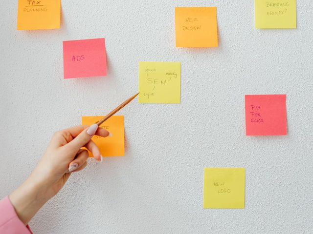
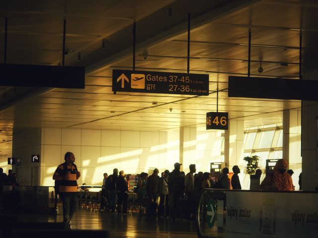
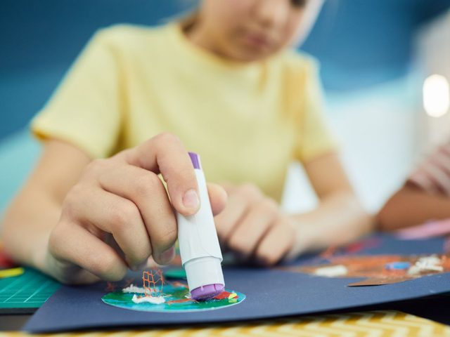
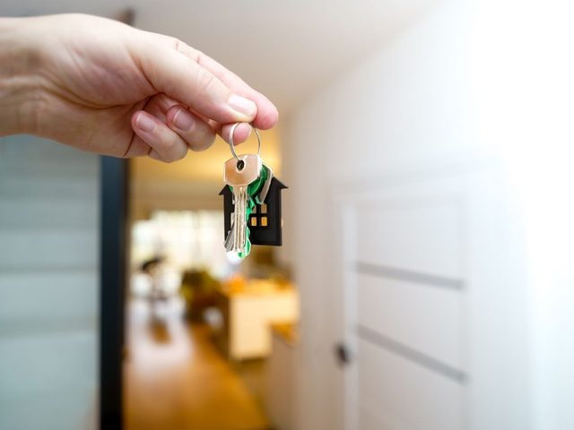
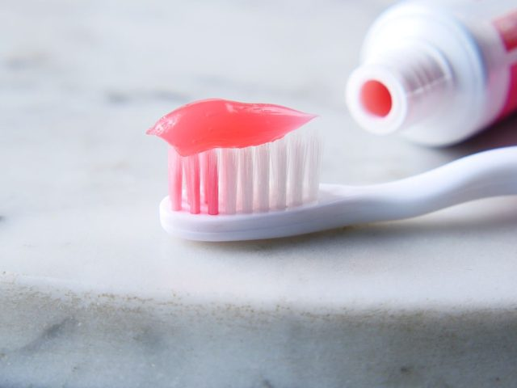
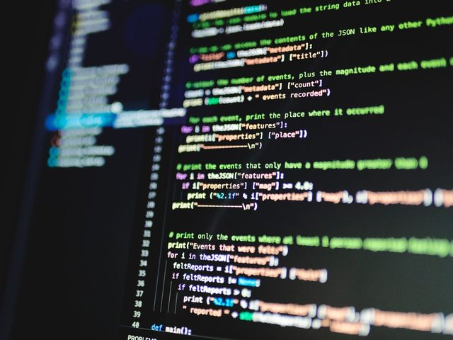

LALA WORD · UNIT 14
一字多義（十四）
Getting Lazy with Technology
19 個單字一字多義
本單元單字一覽
button 是按鈕，也是「鈕扣」；key 是鑰匙，也是「關鍵」。這個單元有 5 個主題單字、14 個更多單字，再整理 cross／across，和都是「帶」的 take／bring／carry。
buttonnotetypescreenseedareadropgategluehoneykeylandlistpackpastepipepotprogramswing
每個字先聽 🔊，再一個意思一個意思看例句。
1. button 主題單字．3 個意思

button
button - buttoned - buttoned - buttoning
n.按鈕press / push the button 按按鈕
Press the red button to start.
按紅色按鈕開始。
n.鈕扣do up / undo the buttons 扣上／解開扣子
A button fell off my shirt.
我襯衫掉了一顆扣子。
v.扣上（鈕扣）button up 扣好
Button up your coat. It's windy.
把外套扣好，風很大。
2. note 主題單字．4 個意思

note
note - noted - noted - noting
n.筆記take notes 做筆記
Take notes during the class.
上課時要做筆記。
n.便條leave a note 留便條
Mom left a note on the fridge.
媽媽在冰箱上留了一張便條。
n.音符；語氣
She can sing very high notes.
她能唱很高的音。
v.記下；注意note down 記下
Please note down my phone number.
請把我的電話記下來。
3. type 主題單字．3 個意思

type
type - typed - typed - typing
v.打字
My sister can type very fast.
我姊姊打字很快。
n.類型blood type 血型
What type of movies do you like?
你喜歡哪一類的電影？
n.字型；字體
The type on this sign is too small.
這個牌子上的字太小了。
4. screen 主題單字．3 個意思

screen
screen - screened - screened - screening
n.螢幕screen time 使用螢幕的時間；touch screen 觸控螢幕
Don't look at the screen too long.
不要盯著螢幕太久。
v.放映；播出
The movie will be screened next week.
這部電影下星期上映。
v.篩選；檢查
All bags are screened at the airport.
機場會檢查所有行李。
5. seed 主題單字．3 個意思

seed
seed - seeded - seeded - seeding
n.種子plant a seed 播種
Plant the seeds in the spring.
春天把種子種下去。
v.播種
The farmer seeded the field with corn.
農夫在田裡播了玉米種子。
v.去籽
Seed the peppers before you cook them.
煮之前先把辣椒去籽。
6. area 更多單字．3 個意思
area
複數 areas
n.地區；區域area code 區碼
There are many parks in this area.
這個地區有很多公園。
n.領域；方面
Math is her best area.
數學是她最強的領域。
n.面積
What is the area of this room?
這個房間的面積是多少？
7. drop 更多單字．4 個意思

drop
drop - dropped - dropped - dropping
v.掉落
I dropped my phone on the floor.
我的手機掉到地上。
v.下降
The temperature dropped to 12°C.
氣溫降到十二度。
v.放棄；停止drop out 中途退出
Let's drop the subject.
我們別再談這件事了。
n.一滴；少量eye drops 眼藥水
Just a drop of milk, please.
請加一點點牛奶就好。
8. gate 更多單字．2 個意思

gate
複數 gates
n.大門
Let's meet at the school gate.
我們在校門口碰面吧。
n.登機門
Our flight leaves from Gate 12.
我們的班機從十二號登機門出發。
9. glue 更多單字．3 個意思

glue
glue - glued - glued - gluing
n.膠水
I need some glue for my art project.
我的美勞作業需要膠水。
v.用膠黏
Glue the picture onto the card.
把圖片黏到卡片上。
v.盯著（be glued to）be glued to 全神貫注盯著
He was glued to the TV all night.
他整晚盯著電視看。
10. honey 更多單字．2 個意思

honey
n.蜂蜜
I put some honey in my tea.
我在茶裡加了一些蜂蜜。
n.親愛的
Honey, dinner is ready.
親愛的，晚餐好了。
11. key 更多單字．4 個意思

key
key - keyed - keyed - keying
n.鑰匙key chain 鑰匙圈
I can't find my keys.
我找不到我的鑰匙。
n.關鍵the key to …的關鍵；key word 關鍵字
Practice is the key to success.
練習是成功的關鍵。
n.音調
This song is in a high key.
這首歌的調很高。
v.用鍵盤輸入key in 輸入
Key in your password.
輸入你的密碼。
12. land 更多單字．4 個意思
land
land - landed - landed - landing
n.陸地；土地
The sailors were happy to see land.
水手們很高興看到陸地。
n.國家；國度
Taiwan is a land of beautiful mountains.
臺灣是一片山景美麗的土地。
v.著陸；降落
The plane will land in ten minutes.
飛機十分鐘後降落。
v.得到；贏得
She landed a part in the school play.
她在學校話劇中拿到了一個角色。
13. list 更多單字．2 個意思

list
list - listed - listed - listing
v.列出
List three things you are thankful for.
列出三件你感謝的事。
n.名單；清單to-do list 待辦清單
I made a shopping list.
我寫了一張購物清單。
14. pack 更多單字．4 個意思

pack
pack - packed - packed - packing
v.打包；收拾行李pack up 收拾好
Pack your bag tonight.
今晚把包包整理好。
v.擠滿be packed with 擠滿
The MRT was packed with people.
捷運擠滿了人。
n.一包；一副a pack of cards 一副撲克牌
I bought a pack of gum.
我買了一包口香糖。
n.一群（動物）
A pack of dogs ran down the street.
一群狗沿著街跑過去。
15. paste 更多單字．3 個意思

paste
paste - pasted - pasted - pasting
v.貼上
Paste the picture in your notebook.
把圖片貼在你的筆記本上。
v.（電腦）貼上copy and paste 複製貼上
Copy the link and paste it here.
把連結複製貼到這裡。
n.漿糊；糊狀物toothpaste 牙膏
Squeeze some toothpaste onto your brush.
在牙刷上擠一點牙膏。
16. pipe 更多單字．2 個意思

pipe
複數 pipes
n.管子
Water is coming out of the broken pipe.
水從破掉的管子流出來。
n.菸斗
The old sailor smoked a pipe.
那位老水手抽菸斗。
17. pot 更多單字．2 個意思

pot
pot - potted - potted - potting
n.鍋；壺；罐hot pot 火鍋；teapot 茶壺
Mom is cooking soup in a big pot.
媽媽用大鍋煮湯。
v.把…種在盆裡
Let's pot these little plants.
我們把這些小植物種進盆裡吧。
18. program 更多單字．4 個意思

program
program - programmed - programmed - programming
n.電腦程式
Download this program to edit photos.
下載這個程式來修圖。
n.節目
My favorite TV program is on at eight.
我最喜歡的電視節目八點播出。
n.計畫；課程
Our school has an exchange program.
我們學校有交換學生計畫。
v.寫程式；設定
He programmed the robot to dance.
他寫程式讓機器人跳舞。
19. swing 更多單字．5 個意思

swing
swing - swung - swung - swinging
v.擺動；盪swing by 順道去
The kids are swinging in the park.
孩子們在公園盪鞦韆。
v.揮動
Swing the bat hard!
用力揮棒！
v.（心情）轉變
Her mood swings from happy to sad quickly.
她的心情很快就從開心變難過。
n.變化
There was a big swing in temperature today.
今天溫差很大。
n.鞦韆
Let's take turns on the swing.
我們輪流盪鞦韆吧。
易混淆字：cross 和 across
| 單字 | 用法 | 例句 |
|---|---|---|
| cross | （動詞）穿越；橫越；交叉 | Look both ways before you cross the street. |
| across | （介系詞、副詞）在…的對面；橫越 | The bank is across from the school.／We walked across the bridge. |
cross 是動作本身；across 要配動詞（walk across、swim across）。
易混淆字：take／bring／carry
| 單字 | 用法 | 例句 |
|---|---|---|
| take | 帶去：從說話者這裡帶到別的地方 | Take an umbrella with you. |
| bring | 帶來：帶到說話者這裡 | Bring your homework tomorrow. |
| carry | 搬、提、背：強調「拿著移動」的動作 | He carried the heavy box upstairs. |
一字多義：最常見 vs. 容易忽略的意思
| 單字 | 最常見的意思 | 容易忽略的意思 |
|---|---|---|
| button | 按鈕 | 鈕扣 |
| note | 筆記 | 便條；音符 |
| screen | 螢幕 | 放映；檢查 |
| key | 鑰匙 | 關鍵；音調 |
| land | 陸地 | 降落；得到 |
| pack | 打包 | 一包；一群 |
| honey | 蜂蜜 | 親愛的 |
| swing | 擺動 | 鞦韆 |
快問快答：這句的 粗體字 是什麼意思？
1Button up your coat. It's windy.扣上（鈕扣）
2Please note down my phone number.記下；注意
3The type on this sign is too small.字型；字體
4All bags are screened at the airport.篩選；檢查
5Seed the peppers before you cook them.去籽
6What is the area of this room?面積
7Just a drop of milk, please.一滴；少量
8Our flight leaves from Gate 12.登機門
快問快答：這句的 粗體字 是什麼意思？
1He was glued to the TV all night.盯著（be glued to）
2Honey, dinner is ready.親愛的
3Key in your password.用鍵盤輸入
4She landed a part in the school play.得到；贏得
5I made a shopping list.名單；清單
6A pack of dogs ran down the street.一群（動物）
7Squeeze some toothpaste onto your brush.漿糊；糊狀物
8The old sailor smoked a pipe.菸斗
學完了！接下來
複習方法
review
- 回到「📗 單字卡」，按「遮中文」，看例句說出每個意思
- 特別記「容易忽略的意思」（例如 pen 圍欄、ball 舞會）
- 每個例句跟著 🔊 唸一次
準備好了
- 按右上角「📝 前往測驗」
- 測驗錯的題目要訂正到全對
- 訂正完成補送 1 點